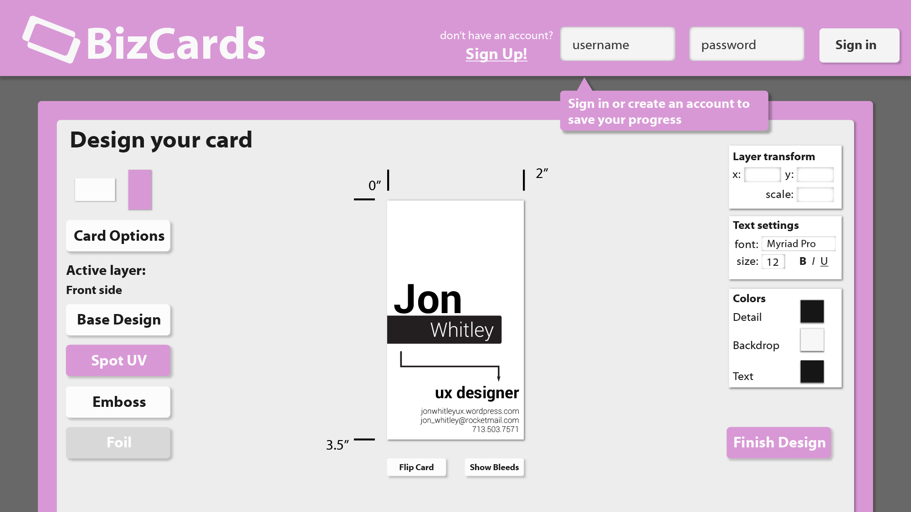
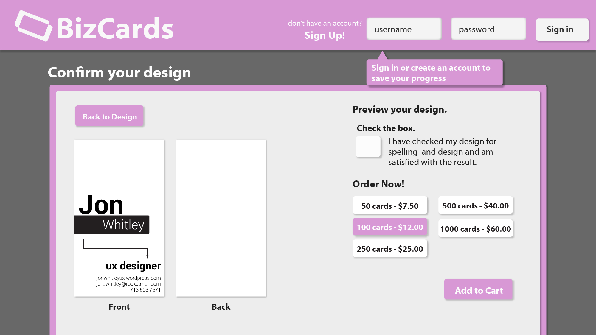
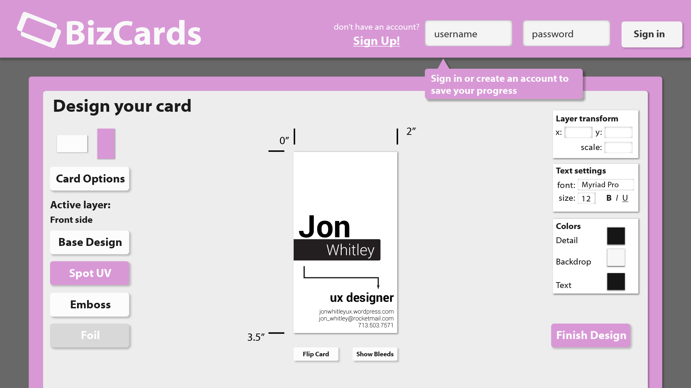
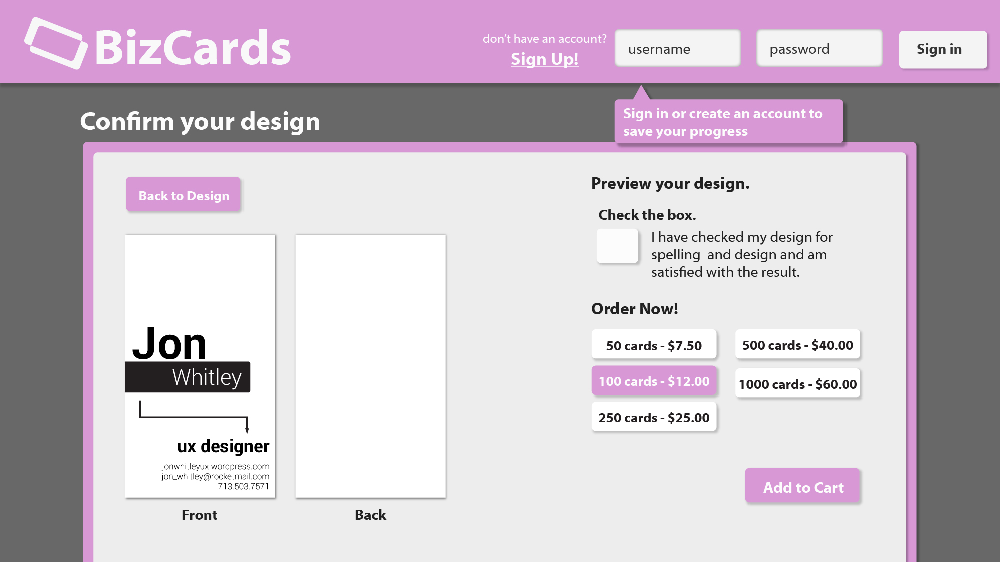

{kind=link}
{kind=link}
{kind=link}
{kind=link}
{kind=link}
{kind=link}
{kind=link}
{kind=link}
 



Not too long ago I decided to order some new
business cards, and I found that, pretty much
everywhere, it is a painful, obfuscated process.
It inspired me to design my own. I’ve felt for a
while that my portfolio needed some examples of
web design and I thought this presented an
excellent opportunity to show that I can design
a unified experience across both web and mobile.
Thus a design was born. This is a design for a
web-based print company that specializes chiefly
in business cards.
Here’s the final prototype, assembled in Adobe XD:
(Note, this link will take you to a different webpage,
to return here you’ll have to click your back arrow).
BizCards - Mobile, High Fidelity Prototype
Case Study:
Process-
To start with I ran through the process of ordering
business cards from a number of different large-scale
printing services to see how they typically work. I
looked for distinct commonalities between them,
trying to discern what is necessary, what is what you
could call "landmark orthodoxy" (common processes
between services that users look to for navigation),
and what might be common areas of friction that can
be improved upon.
Once I created a list of necessary elements for the
design I pulled up one of my standard User Personas
and wrote a User Journey. You can actually read the
User Journey by clicking the link below (it opens
as a .pdf):
Mark orders some business cards.
I then proceeded onto the wireframe stage.
Once that was finished I decided to jump straight into high-fidelity mockups. For the web version I did the high-fidelity mockups in Adobe Illustrator. Here they are:
Once I was finished with the web version I decided
to move on to the mobile app. Using the same research
and the same User Journey I moved again into the
planning phase. I wanted to design an app that
maintained the same navigational logic between the
two versions of the app. The challenge was finding
ways to keep the experienced streamlined when the
working space has been significantly diminished.
There were definitely challenges in transcribing it,
for instance the Design screen was difficult to swing
with a more restricted screen-size, and there was so
much necessary information tied up in the Transaction
Processing screen that I simply couldn't fit it in one
screen. Even so, I think it works really well. See for
yourself:
BizCards - Mobile, High Fidelity Prototype
After all, I think this project has been some of my best design work to-date, and I think it definitely deserves its spot on my portfolio.
{kind=link}
{kind=link}
{kind=link}
{kind=link}
{kind=link}
{kind=link}
{kind=link}
{kind=link}
{kind=link}